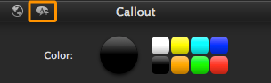

Save an annotation for reuse
Save an annotation for reuse
You can customize and save the properties for annotations (text, callouts, arrows, shapes, highlighter, and blur).
Save an annotation:
- Click the Annotations tab. Select the desired tool.
- Drag an annotation onto the timeline or canvas.
- Click to select the annotation on the timeline or canvas.
- Click the Properties button
 . Edit the desired properties.
. Edit the desired properties.
- Click the Save button in the Properties panel to save the style to Annotations.

The new style appears within the available styles on the Annotations tab.

See also
Assets and effects
Add a callout